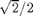
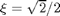
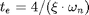
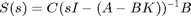
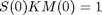
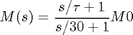
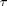
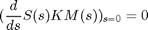
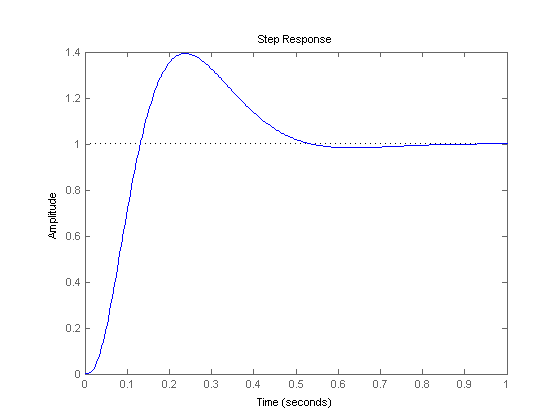

Contents
ES868 – Pré Relatório Lab 6
Controle por realimentação de saída de uma planta eletrônica
Turma A - 26/04/2015
- Augusto Miranda Garcia - 104627
- Guilherme de Oliveira Souza – 117093
- Vinícius Ragazi David - 120258
clear all load ../G.mat
Localização dos polos
Deseja-se que o tempo de estabilização seja de 0.5s e o coeficiente de amortecimento seja

Dessa forma,

t_e = 0.5; xi = sqrt(2)/2
xi =
0.7071
Como

, obtém-seomega_n = 4/t_e/xi
omega_n = 11.3137
Dessa forma, os dois pólos dominantes serão
p1 = omega_n*(-xi+i*sqrt(1-xi*xi)) p2 = omega_n*(-xi-i*sqrt(1-xi*xi))
p1 = -8.0000 + 8.0000i p2 = -8.0000 - 8.0000i
O terceiro polo foi escolhido arbitrariamente como sendo em -30
p3 = -30; p = [p1; p2; p3];
Modelo de estados
Gss = ss(G) A = Gss.a; B = Gss.b; C = Gss.c;
Gss =
a =
x1 x2 x3
x1 -120 -51.76 0
x2 64 0 0
x3 0 1 0
b =
u1
x1 16
x2 0
x3 0
c =
x1 x2 x3
y1 0 0 29.09
d =
u1
y1 0
Continuous-time state-space model.
Determinação da matriz K
K = acker(A, B, p)
K = -4.6242 -2.6412 3.7500
Pólos do observador
Os pólos do observador devem ser escolhidos de forma que o estado estimado siga o estado verdadeiro o mais rápido possível. Para isso, eles devem estar mais à esqueda que os pólos do controlador.
Dessa forma, foi escolhido arbitrariamente que a parte real deveria ser 50% mais negativa
po = [-150, -150, -150]
po = -150 -150 -150
Determinação da matriz L
L = acker(A', C', po)'
L = -359.1449 845.2453 11.3436
Determinação de M(s)
Para determinar M(s) precisamos antes definir S

s = tf('s');
I = eye(3);
S = C*inv(s*I - (A - B*K))*B
S =
2.979e04
---------------------------
s^3 + 46 s^2 + 608 s + 3840
Continuous-time transfer function.
O primeiro passo é determinar M(0) = [m1; m2; m3], fazendo

M0 = pinv(evalfr(S, 0)*K)
M0 =
-0.0141
-0.0080
0.0114
Supondo:

Deve-se determinar

de forma que:
sx = sym('s'); taux = sym('tau'); Sx = poly2sym(S.num{1}, sx)/poly2sym(S.den{1}, sx); Mx = (sx/taux+1)/(sx/30+1)*M0; tau = eval(solve(subs(diff(Sx*K*Mx, sx), sx, 0) == 0)) M = (s/tau+1)/(s/30+1)*M0
tau =
5.2174
M =
From input to output...
-0.4215 s - 2.199
1: -----------------
5.217 s + 156.5
-0.2408 s - 1.256
2: -----------------
5.217 s + 156.5
0.3418 s + 1.783
3: ----------------
5.217 s + 156.5
Continuous-time transfer function.
Simulação do sistema
H = minreal(K*M) temp = minreal(inv(s*I - (A - L*C))); C_u = minreal(K*temp*B) C_y = minreal(minreal(K*temp)*L)
H =
0.7412 s + 3.867
----------------
s + 30
Continuous-time transfer function.
C_u =
-73.99 s^2 - 2.712e04 s - 2.708e06
------------------------------------
s^3 + 450 s^2 + 6.75e04 s + 3.375e06
Continuous-time transfer function.
C_y =
-529.2 s^2 + 3420 s + 4.35e05
------------------------------------
s^3 + 450 s^2 + 6.75e04 s + 3.375e06
Continuous-time transfer function.
Função de transferência de malha fechada
sistema = minreal(H*G / (1+C_u+G*C_y), 1e-4) step(sistema) stepinfo(sistema)
sistema =
2.208e04 s + 1.152e05
-----------------------------------------------
s^4 + 76 s^3 + 1988 s^2 + 2.208e04 s + 1.152e05
Continuous-time transfer function.
ans =
RiseTime: 0.0822
SettlingTime: 0.4996
SettlingMin: 0.9032
SettlingMax: 1.3935
Overshoot: 39.3467
Undershoot: 0
Peak: 1.3935
PeakTime: 0.2364
